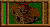
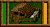
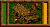
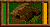
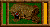
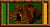

| BUDYNEK G£ÓWNY - siedziba Rady Starszych Wioski. Dostajemy go na pocz¹tku ka¿dej (klasycznej) misji. Mo¿emy w nim budowaæ drogê (na rzece most), oborê, chatê mieszkaln¹ oraz dwór mocy. |
 |
| OBORA - jak sama nazwa wskazuje jest zamieszkana przez krowy, maksymalnie trzy sztuki. Krowy po najedzeniu siê traw¹ wracaj¹ do niej w celu oddania mleka. Obora jest czymœ w rodzaju rafineri. Mo¿na j¹ stworzyæ w budynku g³ównym. |
 |
| CHATA MIESZKALNA - jej mieszkañcy to ludzie raczej pokojowo nastawieni, choæ w razie potrzeby mog¹ przyst¹piæ do obrony. Budynek mo¿e pomieœciæ maksymalnie szeœciu drwali lub myœliwych. Mo¿na j¹ stworzyæ w budynku g³ównym. Umo¿liwia nam wybudowanie chaty wojów. |
 |
| CHATA WOJÓW - zamieszkana przez ludzi, których ¿ywio³em jest wojna. Mo¿e pomieœciæ maksymalnie czterech mieczników i w³óczników. Do wybudowania jej konieczna jest chata mieszkalna. Bardzo wa¿ny budynek ze wzglêdu na mo¿liwoœæ budowy palisady oraz dworu rycerza. |
 |
| DWÓR RYCERZA - prawdziwa willa. Zamieszka³a tylko przez jednego rycerza. Mo¿na j¹ wybudowaæ w chacie wojów. Najwy¿sze osi¹gniêcie w dziedzinie architektury w tamtych czasach. |
 |
| DWÓR MOCY - miejsce kultów naszych kap³anów. Mo¿e pomieœciæ maksymalnie cztery magiczne postacie, jakimi s¹ kap³an i kap³anka. Mo¿emy go zbudowaæ na samym pocz¹tku, gdy¿ wymagany do tego jest jedynie budynek g³ówny. |
 |